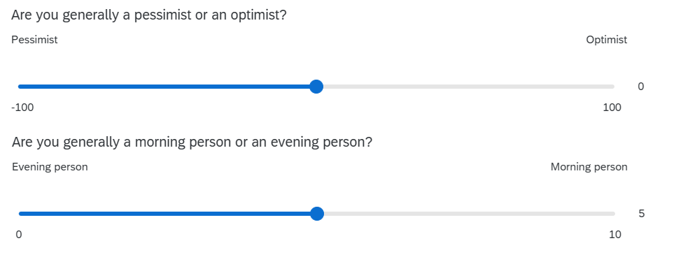

library(tidyverse)
sdata <- read_csv("https://uoepsy.github.io/data/dapr1_2627_survey.csv")
sdata <- sdata |>
mutate(
outlookZ = ( outlook - mean(outlook) ) / sd(outlook),
ampmZ = ( ampm - mean(ampm) ) / sd(ampm)
)W7: Z-scores & the Normal Distribution
Pick someone new to be the driver this week. If everyone in the group has already had a week as the driver, start going round again!
The driver will type the code. The rest of you are navigators, you need to tell the driver where to go (i.e., what to type!).
Driver instructions:
- Log in to the bigger screen at your table
- Open RStudio Server. See the first drop-down in the FAQs page for instructions
- Open a new .R script, and load the tidyverse package.
- Listen to your navigators
Navigator instructions:
- Tell your driver where to go (i.e., what to type)!
Question 1
In this week’s workshop, you will practice transforming raw scores to z-scores, reasoning about the probability of those z-scores, and back-transforming z-scores onto their original scale. The goal of this workshop is to help you get comfortable with the concept of transforming variables into a standardised score.
Once again, read in the survey data from https://uoepsy.github.io/data/dapr1_2627_survey.csv. Store it under the variable name sdata.
🗂️ See Read in and inspect data flash card.
This week, we’ll work with the data about people’s outlook (how pessimistic vs. optimistic they are) and their chronotype (how much of an evening person vs. a morning person they are). Here are the questions that generated that data:

You’ll notice that each question uses a quite different scale: outlook ranges from –100 to 100, while ampm (the chronotype variable) ranges from 0 to 10. So someone with an outlook score of 10 is in a very different part of the scale, compared to someone with an ampm score of 10!
Create two new variables in your dataframe. One should be the z-scored version of outlook (call it outlookZ), and the other should be the z-scored version of ampm (call it ampmZ).
🗂️ See Mutate columns and Calculate z-scores flash card.
Question 2
In this question, you’ll find the pseudonyms, scores, and z-scores of the three most optimistic people and the three “morning people”-est people.
First, sort your dataframe by your outlookZ column, in descending order.
🗂️ See Sort a dataframe with arrange() flash card.
Next, extract the top three rows of your sorted dataframe.
🗂️ See Subset a dataframe > Extract row(s) flash card.
Finally, extract only the columns that we care about for this question: pseudonym, outlook, and outlookZ.
🗂️ See Subset a dataframe > Extract columns(s) > select() flash card.
Repeat this process for the ampm variable to find the three people who identify most strongly as morning people.
Is any of these people you?
Question 3
From now on, we’ll just focus on outlook and its z-scores. *We’ll come back to ampm in the last workshop of this semester.)
Plot your standardised outlook scores (that is, outlookZ) as a density curve.
🗂️ See Make a density plot flash card.
Once you have made your plot, add this bit of code to the end of it. This additional code will overlay a red standard normal distribution (with mean 0, standard deviation 1) over your density curve. (The ...s in the code chunk represents the code you used to make the density plot.)
...
... +
stat_function(fun = dnorm, args = list(mean = 0, sd = 1), colour = "red")
CautionRabbit hole: What do the parts of
stat_function() mean?
You don’t have to know or remember any of this! But if you’re curious:
stat_function()adds a statistical function to the plot. This is different from adding a “geom” because geoms are based on data—statistical functions are calculated based on the information we give next.fun = dnormspecifies that the function (fun) to add is the normal (norm) distribution (d).args = list(mean = 0, sd = 1)specifies that the function should use a mean of 0 and a standard deviation of 1, which are the parameters of the standard normal distribution.colour = "red"tells R that we want the distribution to be coloured red.
Question 4
This is a challenging question, get ready!
To start: Did anyone in your group give a pseudonym in the survey? If yes, use your groupmate’s pseudonym for this question; if no, use “noodle_horse” (that’s what Josiah calls his greyhound Dougal).
Next, extract the row containing that pseudonym from the dataset using the tidyverse function filter().
🗂️ See Subset a dataframe > filter() flash card.
Now: using the function pnorm(), compute the probability of seeing somebody less optimistic than this person. In other words, you want to find the probability that somebody has a lower outlookZ score than your chosen person (or greyhound).
Next: still using pnorm(), compute the probability of seeing somebody more optimistic than your chosen person (or greyhound).
🗂️ See Explore a normally-distributed variable flash card.
Finally: Check that these two probabilities sum up to 1.
Question 5
Finally, z-scoring is not just a one-way process. Sometimes you might start with variables in z-scored form, and you might want to transform them back onto their original scale (in other words, you might want to “back-transform” them).
Here’s the process that will “undo” a z-score by back-transforming it onto the original scale:
\[ \text{value on original scale} = \text{original mean} + (\text{z-score} \times \text{original SD}) \] Here’s the more mathematical version of this formula from the lecture slides:
\[ X = M + (Z \times SD) \]
where \(X\) is the raw score / the score on the original scale, \(M\) is the population mean (or our best guess about it based on our sample), \(Z\) is the z-score, and \(SD\) is the population standard deviation (or our best guess about it based on our sample).
First, to get the parts of this formula that we need, run the following code to find the original mean and SD of outlook and store them under their own variable names:
outlook_mean <- mean(sdata$outlook)
outlook_sd <- sd(sdata$outlook)Using the formula above, calculate the value on the original outlook scale that corresponds to a z-score of 1. (In other words, what value of outlook is one standard deviation above the mean?)
Finally, calculate the value on the outlook scale that corresponds to a z-score of –2. (In other words, what value of outlook is two standard deviations below the mean?)
🗂️ See Calculate z-scores > Back-transform flash card.
Finishing up
Once you’ve finished, don’t forget to:
- Save your R script
- Post the R script to the group discussion space on Learn, to ensure that everyone has access to it! (For step-by-step instructions on how to do this, click here)